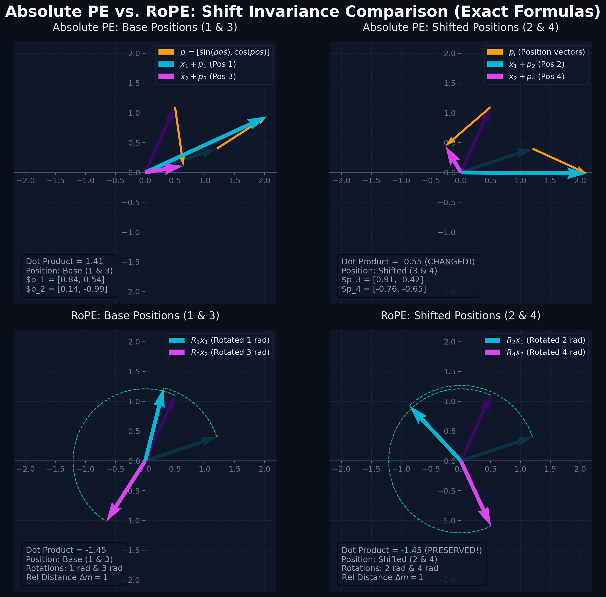
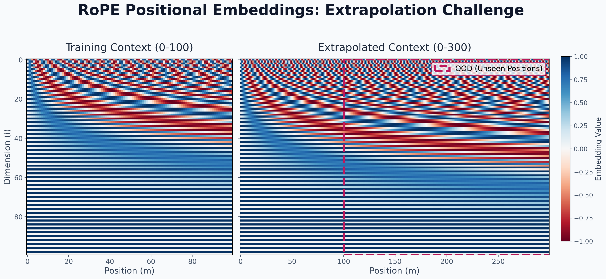
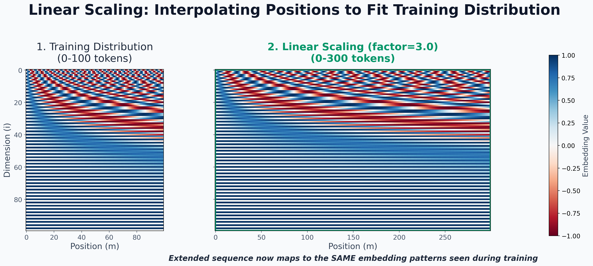
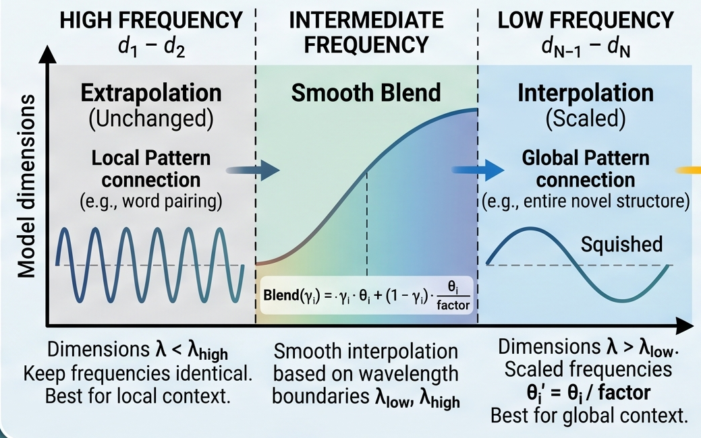

Transformers revolutionized deep learning by processing sequences in parallel rather than sequentially. But this parallel processing introduced a fundamental flaw: the architecture is inherently permutation-equivariant. If you scramble the words in a sentence, a pure Transformer will output the exact same representations, just scrambled.
To a raw Transformer, "The dog bit the man" and "The man bit the dog" are identical due to the self-attention mechanism.
To fix this, we need Positional Embeddings (PE) — a way to inject order into the model. In this post, we’ll trace the evolution of positional embeddings from the original Transformer design to the dominant standard in modern LLMs: Rotary Position Embeddings (RoPE), and explore how we scale context windows post-training using techniques like YaRN.
1. The Original Solution: Sinusoidal (Absolute) Positional Embeddings
In the seminal 2017 paper "Attention Is All You Need" (Vaswani et al.), the authors introduced a deterministic, non-learned approach. They added a unique dense vector to each token's input embedding based on its absolute position in the sequence.
The Math
Instead of relying on a single integer to represent position (which would scale poorly and disrupt the gradients), they used a mix of sine and cosine functions operating at different frequencies across the embedding dimensions:
$$PE_{(pos, 2i)} = \sin\left(\frac{pos}{10000^{2i/d_{model}}}\right)$$$$PE_{(pos, 2i+1)} = \cos\left(\frac{pos}{10000^{2i/d_{model}}}\right)$$Where:
posis the position of the token in the sequence.iis the dimension index.d_modelis the embedding dimension.
Deconstructing the Equation: Why these specific numbers?
Looking at the formula, you might wonder why the authors chose this specific arrangement of variables. Every piece serves a distinct mathematical purpose:
- Why
2iand noti? (The Sine/Cosine Pairing): The formula splits the embedding vector into pairs. The even dimensions ($2i$) use the sine function, and the adjacent odd dimensions ($2i+1$) use the cosine function of the exact same frequency. This pairing is crucial because of linear algebra and trigonometry. A linear layer in the network can easily compute relative position offsets using the angle addition identities, such as $\sin(A+B) = \sin A\cos B + \cos A\sin B$. If the authors had simply usedi, every single dimension would have a slightly different frequency, destroying this mathematical relationship. - Why
d_modelas the denominator? (Normalized Scaling): The term $2i / d_{model}$ creates a smooth fraction that strictly scales from $0$ up to $1$, regardless of the model's size. Whether your model has a tiny embedding dimension of 128 or a massive one of 4096. Without dividing byd_model, changing the embedding size would drastically alter the frequency distribution of the embeddings. - Why
10000? (The Base Wavelength): This is a hyperparameter that dictates the maximum wavelength. The frequencies in the formula range from $1$ (when $i=0$) down to incredibly small fractions (when $2i \approx d_{model}$). A base of 10,000 ensures that the lowest frequency curve has a massive wavelength of $10000 \times 2\pi$. Because this wave is so stretched out, it prevents "wrap-around" confusion. If the base were too small (like 100), the sine wave would repeat itself quickly, and the network might confuse token position 5 with position 105 because their embeddings would look mathematically identical.
Why design it this way?
- Uniqueness: Every position gets a unique encoding.
- Bounded Values: Sine and cosine output values between $[-1, 1]$, keeping the embedding scale stable.
- Relative Potential: The authors hypothesized that the model could easily learn to attend by relative positions, because for any fixed offset $k$, $PE_{pos+k}$ can be represented as a linear function of $PE_{pos}$.
Models using this: FSMT, Marian, Pegasus, and time-series models like Autoformer.
2. The Shift to Learned Positional Embeddings
While sinusoidal embeddings were mathematically elegant, many subsequent models (like BERT, GPT-2, and OPT) opted for a simpler approach: Learned Positional Embeddings.
Instead of a fixed mathematical formula, the model initializes a separate nn.Embedding matrix of shape [max_seq_len, d_model].
During training, the model backpropagates into this matrix, learning the optimal vector representation for "Position 1," "Position 2," and so on.
- The Advantage: It directly optimizes for the dataset.
- Example: Imagine you are training a model purely on a dataset of clinical medical records where every document strictly begins with the same template: [Date] [Patient ID] [Symptoms].... A fixed sinusoidal formula just tells the model, "Position 1 is the first word, Position 2 is the second word." But a learned embedding updates its weights during training based on the loss function. Over time, the embedding vector for Position 1 will naturally mold itself to carry the semantic meaning of "Date/Temporal Information," and Position 2 will inherently represent "Identity." The model doesn't just learn spatial distance; it learns the specific structural biases and layout of your exact dataset.
- The Flaw: It is strictly bound by the
max_seq_lenseen during training. If BERT is trained on 512 tokens, asking it to process token 513 results in a crash because $E_{pos}[513]$ simply doesn't exist. Extrapolation is impossible without retraining.
3. Enter RoPE: Rotary Position Embeddings
Both Sinusoidal and Learned embeddings are Absolute — they encode where a token is in the overall sequence. However, language relies heavily on Relative distances. The relationship between an adjective and a noun is determined by how far apart they are, not whether they appear at position 5 or position 500.
Introduced by Su et al. (2021) in the RoFormer paper, Rotary Position Embeddings (RoPE) solved this by encoding relative position through absolute rotation.
How RoPE Works
Instead of adding a positional vector to the token embedding before the attention mechanism, RoPE intercepts the Query ($Q$) and Key ($K$) vectors inside the attention head, right before they are multiplied together.
RoPE pairs up the dimensions of the vector into 2D chunks and rotates each 2D chunk on a Cartesian plane. The angle of rotation depends on the token's position $m$.
$$f(x_m, m) = R_{\Theta,m} \cdot x_m$$The rotation matrix $R_{\Theta,m}$ for position $m$ looks like this:
$$R_{\Theta,m} = \begin{pmatrix} \cos m\theta_1 & -\sin m\theta_1 & & \\ \sin m\theta_1 & \cos m\theta_1 & & \\ & & \cos m\theta_2 & -\sin m\theta_2 \\ & & \sin m\theta_2 & \cos m\theta_2 \\ & & & & \ddots \end{pmatrix}$$Linking RoPE to Original Transformers
Here is the brilliant part: what are those $\theta$ angles? They are exactly the same frequency basis used in the original 2017 sinusoidal embeddings!
$$\theta_i = 10000^{-2i/d}$$Vaswani added these frequencies to the inputs. RoPE uses these frequencies to rotate the Q and K vectors.
Because rotation is a linear operation, when the attention mechanism computes the dot product between a Query at position $m$ and a Key at position $n$, the absolute positions cancel out. The resulting attention score is governed entirely by the relative distance $(m - n)$:
$$\langle f(q_m, m), f(k_n, n) \rangle = \langle R_{\Theta,m-n} \cdot q_m, k_n \rangle$$
Code Implementation (PyTorch)
To see how this works in practice, here is the core implementation of RoPE (adapted from HuggingFace's central modeling utilities used by models like Llama and Mistral).
First, we generate the rotary frequencies and cache them:
import torch
import torch.nn as nn
class RotaryEmbedding(nn.Module):
def __init__(self, config, device=None):
super().__init__()
self.rope_type = config.rope_parameters.get("rope_type", "default")
self.max_seq_len_cached = config.max_position_embeddings
self.original_max_seq_len = config.max_position_embeddings
# Build base inv_freq (Theta)
base = config.rope_parameters.get("rope_theta", 10000.0)
partial_rotary_factor = config.rope_parameters.get("partial_rotary_factor", 1.0)
head_dim = getattr(config, "head_dim", config.hidden_size // config.num_attention_heads)
# Determine how many dimensions get rotated (often all of them, but not always)
dim = int(head_dim * partial_rotary_factor)
# Compute 10000^(-2i/d)
inv_freq = 1.0 / (base ** (torch.arange(0, dim, 2).float() / dim))
self.register_buffer("inv_freq", inv_freq, persistent=False)
self.attention_scaling = 1.0 # Used later for variants like YaRN
def forward(self, x, position_ids):
# Compute cos/sin for the given position IDs
inv_freq_expanded = self.inv_freq[None, :, None].expand(x.shape[0], -1, 1)
position_ids_expanded = position_ids[:, None, :].float()
# Matrix multiply frequencies by positions
freqs = (inv_freq_expanded @ position_ids_expanded).transpose(1, 2)
# Duplicate frequencies to match the Q/K vector shapes
emb = torch.cat((freqs, freqs), dim=-1)
cos = emb.cos()
sin = emb.sin()
return cos * self.attention_scaling, sin * self.attention_scaling
Once the cos and sin values are generated for the given positions, they are applied to the Query and Key vectors inside the attention layer:
def rotate_half(x):
"""Rotates half the hidden dims of the input."""
x1 = x[..., : x.shape[-1] // 2]
x2 = x[..., x.shape[-1] // 2 :]
return torch.cat((-x2, x1), dim=-1)
def apply_rotary_pos_emb(q, k, cos, sin, unsqueeze_dim=1):
"""Applies Rotary Position Embedding to the query and key tensors."""
cos = cos.unsqueeze(unsqueeze_dim)
sin = sin.unsqueeze(unsqueeze_dim)
# The magical rotation math: (Vector * Cos) + (Rotated_Vector * Sin)
q_embed = (q * cos) + (rotate_half(q) * sin)
k_embed = (k * cos) + (rotate_half(k) * sin)
return q_embed, k_embed
Why RoPE Won:
- It explicitly encodes relative position.
- It decays with distance (distant tokens naturally have lower dot products, which mirrors how language works).
- It introduces zero new parameters.
- Models using this: Nearly every modern LLM — Llama (1-4), Mistral, Qwen, Gemma, Phi, and DeepSeek.
4. Scaling the Context Window: Modern RoPE Variations
RoPE is fantastic, but it shares one flaw with learned embeddings: it extrapolates poorly. If you train a model on 4K tokens, it hasn't learned to evaluate the attention scores for a relative distance of 8K tokens. The rotations become too extreme, and the model generates gibberish.

To extend the context window after training, researchers developed clever mathematical hacks to scale RoPE.
4.1 Linear Scaling (Position Interpolation)
Instead of letting the model extrapolate to unseen distances, we "squish" the new context window to fit within the original trained length by dividing all frequencies by a scaling factor.
$$\theta_i' = \theta_i / \text{factor}$$If you want to double the context from 4K to 8K, your factor is 2. Position 8K is rotated identically to how position 4K used to be.

4.2 Dynamic NTK-Aware Scaling
Linear scaling squishes everything uniformly. But high-frequency dimensions (which handle local, token-to-token relationships) lose resolution when squished. NTK-Aware scaling dynamically alters the frequency base depending on the sequence length. It compresses low-frequency components (higher dimensions) while preserving high-frequency components (lower dimensions), meaning the model doesn't lose its sharp understanding of adjacent words just because the document got longer.
4.3 LongRoPE (Used in Phi-3/4)
Extends the context window to millions of tokens by searching for the optimal, individual scaling factor for each specific dimension rather than applying a single mathematical formula across the board. It uses separate scaling vectors depending on whether the context is short or long.
5. YaRN: The State-of-the-Art in Context Expansion
YaRN (Yet another RoPE extensioN), used in Mistral 4, is one of the most sophisticated methods for zero-shot context extension.
YaRN observed that treating all frequency dimensions the same when interpolating degrades performance. Instead, YaRN calculates the "wavelength" ($\lambda$) of each dimension and divides them into three distinct bands:
- High Frequency (Local patterns): $\lambda_i < \frac{L_{orig}}{\beta_{fast}}$. These dimensions rotate rapidly. YaRN applies Extrapolation (leaves them completely unchanged).
- Low Frequency (Global patterns): $\lambda_i > \frac{L_{orig}}{\beta_{slow}}$. These dimensions barely rotate over the sequence. YaRN applies Interpolation (divides by the scale factor).
- Intermediate Frequency: Everything in between. YaRN applies a Smooth Blend between extrapolation and interpolation based on the distance.
Finally, because YaRN messes with the rotational distribution, it alters the average magnitude of the attention logits. To fix this, YaRN introduces an Attention Scaling Factor ($s$):
$$s = 0.1 \times \text{mscale} \times \ln(\text{factor}) + 1.0$$Multiplying the attention softmax by $s$ perfectly restores the "temperature" of the attention mechanism, allowing a 4K model to read 32K or 128K tokens without additional fine-tuning.

References
- Vaswani et al. "Attention Is All You Need" (2017) — arXiv:1706.03762
- Su et al. "RoFormer: Enhanced Transformer with Rotary Position Embedding" (2021) — arXiv:2104.09864
- Peng et al. "YaRN: Efficient Context Window Extension" (2023) — arXiv:2309.00071
- Ding et al. "LongRoPE: Extending Context Beyond 2M Tokens" (2024) — arXiv:2402.13753
- Kazemnejad et al. "Impact of Positional Encoding on Length Generalization" (2023) — arXiv:2305.19466
- /u/kaiokendev "Extending Context with Linear Scaling" (2023) — Blog
- /u/bloc97 "NTK-Aware Scaled RoPE" (2023) — Reddit
Comments & Reactions